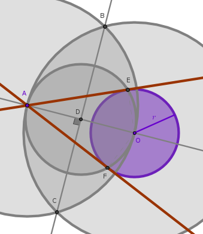

Problem
Construct a straight line tangent to a given circle through a given point not on that circle.
Analysis
The key to solving this problem is Euclid's "Elements" Book 3 Proposition 31:
in a circle the angle in the semicircle is right"
Consequently, we have to construct a right triangle that has the vertex of its right angle located on the circumference of the given circle and whose remaining two vertexes are located at the given point and the center of the given circle.
To locate the only remaining vertex of the right triangle we construct a circle that has the line segment connecting the given point and the center of the given circle as its diameter.
Assuming that \(A\) is a given point and a circle with a center at the point \(O\) and a radius \(r\) are given, we obtain:

Construction
Explanation
First we construct the objects that are given - an arbitrary circle and an arbitrary point not on that circle.
1) On this line we see the point \(O\) for the first time in the course of this construction which means that we need to take action and pick an arbitrary point on the plane and name it \(O\).
2) On this line we see:
$$Cir(O, r)$$for the first time which means that we need to take action and construct a circle with a center at the point \(O\) and an arbitrary radius \(r\).
3) On this line we see:
$$A \not\subset Cir(O, R)$$Since all the objects referenced in that statement have been constructed previously except for the point \(A\), we take action and construct it by picking a point anywhere on a plane not in the circle and not on the circumference of the circle and naming that point \(A\).
Now that we have constructed all the given objects we proceed to the actual solution.
4) On this line we see:
$$Ln(A, O)$$for the first time. The points \(A\) and \(O\) have been constructed previously which means that all we have to do is construct a straight line passing through \(A\) and \(B\).
5, 6) On these two lines we see:
$$Cir(A, AO)$$ $$Cir(O, OA)$$for the first time and we also see that all the intermediate objects have been constructed already which means that we have to take action and construct the two circles mentioned.
7) On this line we see:
$$Cir(A, AO) \cap Cir(O, OA) = B, C$$All the objects referenced in that statement have been constructed already except for the points \(B\) and \(C\). Since we see these objects for the first time we take action and construct them - mark the intersections of the two circles as \(B\) and \(C\).
8) On this line we see:
$$Ln(B, C)$$for the first time and we also see that all the intermediate objects have been constructed already which means that we have to construct a straight line passing through the points \(B\) and \(C\).
9) On this line we see:
$$Ln(B, C) \cap Ln(A, O) = D \colon AD = DO$$The straight lines \(BC\) and \(AO\) exist already and they intersect at a point \(D\) such that \(D\) cuts the \(AO\) and \(BC\) line segments in half. This statement is saying that we are constructing a perpendicular bisector of \(AO\). Since the point of intersection of two straight lines is seen for the first time, we construct it by naming it \(D\).
10) On this line we see:
$$Cir(D, DO)$$for the first time and we also see that all the intermediate objects have been constructed already which means that we have to take action and construct that circle.
11) On this line we see:
$$Cir(D, DO) \cap Cir(O, R) = E, F$$Both circles mentioned in that statement have been constructed in the previous steps - all we have to do is name their intersection points \(E\) and \(F\).
12, 13) On these two lines we see:
$$Ln(A, E)$$ $$Ln(A, F)$$for the first time and we also see that all the intermediate objects have been constructed already. It means that we have to construct these two straight lines.
14, 15) On the next two lines we see:
$$Ln(A, E) \bot Cir(O, R)$$ $$Ln(A, F) \bot Cir(O, R)$$and we also see that all the intermediate objects have been constructed already. These statements are used to explicitly mention the fact that both straight lines in question are tangent or "perpendicular" to the given circle which marks the end of our construction.
We observe here that the above construction can also be compressed into the following collection of compound statements:
$$Ln(A \not\subset Cir(O, R), O)$$ $$Cir(A, AO) \cap Cir(O, OA) = B, C$$ $$Ln(B, C) \cap Ln(A, O) = D \colon AD = DO$$ $$Cir(D, DO) \cap Cir(O, R) = E, F$$ $$Ln(A, E) \bot Cir(O, R), Ln(A, F) \bot Cir(O, R)$$\(\blacksquare\)